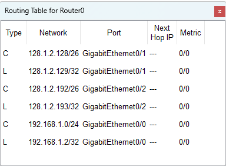

Router> show ip route
Router>
Router> show ip route
Codes: L - local, C - connected, S - static, R - RIP, M - mobile, B - BGP
D - EIGRP, EX - EIGRP external, O - OSPF, IA - OSPF inter area
N1 - OSPF NSSA external type 1, N2 - OSPF NSSA external type 2
E1 - OSPF external type 1, E2 - OSPF external type 2, E - EGP
i - IS-IS, L1 - IS-IS level-1, L2 - IS-IS level-2, ia - IS-IS inter area
* - candidate default, U - per-user static route, o - ODR
P - periodic downloaded static route
Gateway of last resort is not set
128.1.0.0/16 is variably subnetted, 4 subnets, 2 masks
C 128.1.2.128/26 is directly connected, GigabitEthernet0/1
L 128.1.2.129/32 is directly connected, GigabitEthernet0/1
C 128.1.2.192/26 is directly connected, GigabitEthernet0/2
L 128.1.2.193/32 is directly connected, GigabitEthernet0/2
192.168.1.0/24 is variably subnetted, 2 subnets, 2 masks
C 192.168.1.0/24 is directly connected, GigabitEthernet0/0
L 192.168.1.2/32 is directly connected, GigabitEthernet0/0
| item | desc |
|---|---|
| L | Local 本地路由；标识路由器自己； 总是 /32（IPv4）或 /128（IPv6） 如果数据包的目的IP地址是这个，那么就是发给我的，由我来处理 |
| C | connected 直连路由 所有发往这个子网的数据包，可以通过这个接口直接发送 |
| S | static 静态路由；由网络管理员手动配置的路由。 管理员明确指定了到达某个网络的下一跳地址或出接口 |
| * | candidate default / Default Route
候选路由/默认路由；是一条特殊的静态路由 |
| R | RIP 通过RIP协议学习到的路由 |
| O | OSPF 通过OSPF协议学习到的、在同一区域（Area）内的路由 |
| B | BGP 通过BGP协议学习到的路由 |
L 和 C 是最基础的，代表路由器自己知道的网络
S 是管理员手动添加的
其它由路由协议生成
Router# show ip route

Router>en Router#conf ter Enter configuration commands, one per line. End with CNTL/Z. # 配置普通路由 Router(config)#int g0/0/0 Router(config-if)#ip address 192.168.0.254 255.255.255.0 Router(config-if)#no shutdown Router(config-if)#int g0/0/1 Router(config-if)#ip address 192.168.1.254 255.255.255.0 Router(config-if)#no shutdown # 配置默认路由，下一跳地址为 192.168.1.1 Router(config)# ip route 0.0.0.0 0.0.0.0 192.168.1.1 # 退出并保存配置 Router(config)# end Router# write memory
Router(config)# no ip route IP MASK NEXT-HOP
Router>show ip protocols Routing Protocol is "rip" Sending updates every 30 seconds, next due in 9 seconds Invalid after 180 seconds, hold down 180, flushed after 240 Outgoing update filter list for all interfaces is not set Incoming update filter list for all interfaces is not set Redistributing: rip Default version control: send version 2, receive 2 Interface Send Recv Triggered RIP Key-chain GigabitEthernet0/0 22 GigabitEthernet0/1 22 Automatic network summarization is not in effect Maximum path: 4 Routing for Networks: 128.2.0.0 192.168.1.0 Passive Interface(s): Routing Information Sources: Gateway Distance Last Update 128.2.1.1 120 00:00:18 Distance: (default is 120) Router>
Router#show running-config
# 进入特权模式 Router> enable # 进入全局配置模式 Router# configure terminal # 进入 RIP 路由配置模式 R1(config)# router rip # RIPv1 是有类别（Classful）协议，不支持 VLSM（可变长子网掩码）和 CIDR # RIPv2 是无类别（Classless）协议，支持 VLSM、CIDR，并可以关闭自动汇总 R1(config-router)# version 2 # 取消路由自动汇总 R1(config-router)# no auto-summary # 配置网络 R1(config-router)# network 192.168.1.0 R1(config-router)# network 10.0.0.0 R1(config-router)# end R1# write memory
思科在推出ISR G2（第二代）之后，直接跨越到了以全新架构设计的ISR 4000系列（第四代）
之所以没有G3，是因为4000系列进行了颠覆性的革新，为了强调这种代际飞跃，他们选择直接命名为“第四代”
整机吞吐量约 61 Mbps
内置 2 个 10/100 Mbps 百兆以太网口（FastEthernet）
默认内存：DRAM 256MB，Flash 64MB
支持 12.x / 15.x IOS（部分功能受限）
整机吞吐量约 100 Mbps
内置 2 个 10/100/1000 Mbps 千兆以太网口（GigabitEthernet）
默认内存：DRAM 512MB，Flash 256MB
支持 15.x IOS，功能较全面
整机吞吐量约 75 Mbps
内置 2 个 10/100/1000 Mbps 千兆以太网口（GigabitEthernet）
默认内存：DRAM 512MB，Flash 256MB
支持 15.x IOS
整机吞吐量约 180 Mbps
内置 3 个 10/100/1000 Mbps 千兆以太网口（GigabitEthernet）
默认内存：DRAM 512MB，Flash 256MB
支持完整的 15.x IOS 功能
是 G2 系列中性价比最高的型号，接口丰富，性能充足
整机吞吐量约 100 Mbps
内置 2 个 10/100/1000 Mbps 千兆以太网口（GigabitEthernet），支持扩展模块
默认内存：DRAM 4GB，Flash 4GB
基于 x86 架构，支持更高级的加密和应用可视化
整机吞吐量约 200 Mbps
内置 3 个 10/100/1000 Mbps 千兆以太网口（GigabitEthernet），支持扩展模块
默认内存：DRAM 4GB，Flash 4GB
基于 x86 架构，是 2911 的直接升级替代品
首选 2911 经典稳定，性价比最高，PT 实验最稳妥
次选 4331 新一代平台，性能与 2911 持平，功能更新
备选 1941 / 4321 小型网络出口，规模较小时可用
不推荐 2811 / 2901 性能落后（2811 百兆口，2901 吞吐量低），不匹配千兆交换机